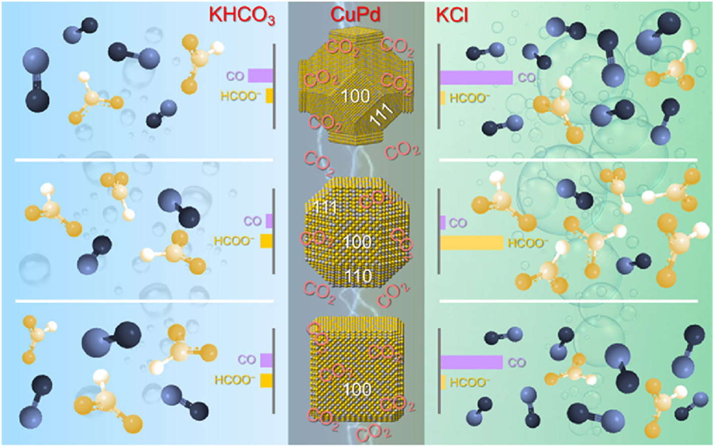
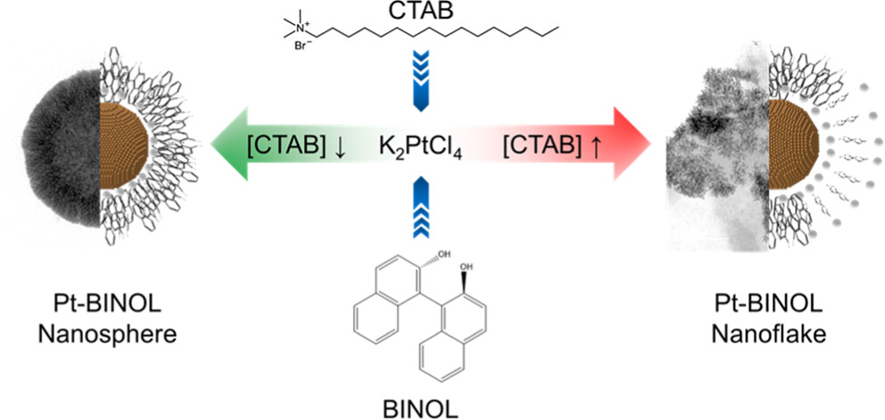

2026

1. Pd Intercalation in BiOCl Nanosheets Promotes Ambient Electrosynthesis of Urea: Operando Study by Synchrotron X-ray Spectroscopies
ACS Applied Materials & Interfaces 18 (19), 28310-28321
2. Electrocatalytic C (sp3)-H bond functionalization using biomass-derived electrodes
Nature Communications 17 (1), 2919

3. Harnessing Transformation of Metal‐Ligand Coordination in Dinuclear Ni (II)‐Schiff Base Coordination Polymer for Promoting Electrochemical Oxygen Evolution
Advanced Science e24014
2025

1. Nitrogen doped Graphene Quantum Dots modified a Crystalline Zinc Phosphite based Non-Enzymatic Electrochemical Sensor for the Ultra-low Detection of Tyramine.
Food Control, 111841

2. Boosting H2 Evolution from Thermal NH3 Decomposition by the Catalyst of Ru Quantum Dots on Mesoporous MgO Dendrite Networks
ACS Sustainable Chemistry & Engineering 13 (27), 10563-10572

3. Turning gas/liquid product selectivity in electrochemical CO2 reduction reaction by modulating CuPd nanocages
Materials Chemistry and Physics 344, 131191
4. Methanol-enhanced low-cell-voltage hydrogen generation at industrial-grade current density by triadic active sites of Pt1–Pdn–(Ni, Co)(OH)x
Journal of the American Chemical Society 147 (4), 3185-3194
2024
1. Operando elucidation of hydrogen production mechanisms on sub-nanometric high-entropy metallenes
Nature Communications 15 (1), 10222

2. Turning the Surface Electronic Effect Over Core‐Shell CoS2─FexCo1‐xS2 Nanooctahedra Toward Electrochemical Water Splitting in the Alkaline Medium
Advanced Science

3. In Operando X-ray Spectroscopic and DFT Studies Revealing Improved H2 Evolution by the Synergistic Ni–Co Electron Effect in the Alkaline Condition
ACS Applied Materials & Interfaces 16 (21), 27329-27338

4. Pt-1, 1′-Bi (2-Naphthol) Nanostructures for Electrochemical H2 Evolution in Alkaline Media
ACS Applied Nano Materials 7 (10), 11890-11899
5. Stabilization of layered lithium-rich manganese oxide for anion exchange membrane fuel cells and water electrolysers
Nature Catalysis 7 (5), 546-559
2023
1. Mimicking metalloenzyme microenvironments in the transition metal‐single atom catalysts for electrochemical hydrogen peroxide synthesis in an acidic medium
Small Methods 7 (10), 2300234
2. Modification of Conductive Carbon with N‐Coordinated Fe− Co Dual‐Metal Sites for Oxygen Reduction Reaction
ChemElectroChem 10 (19), e202300272
3. Face-centered cubic ruthenium nanocrystals with promising thermal stability and electrocatalytic performance
ACS catalysis 13 (16), 11023-11032
4. Identifying a universal activity descriptor and a unifying mechanism concept on perovskite oxides for green hydrogen production
Advanced Materials 35 (44), 2305074
5. Spin‐polarization strategy for enhanced acidic oxygen evolution activity
Advanced Materials 35 (35), 2302966
6. A derivative of ZnIn2S4 nanosheet supported Pd boosts selective CO2 hydrogenation
Advanced Functional Materials 33 (30), 2215148
7. Unusual double ligand holes as catalytic active sites in LiNiO2
Nature Communications 14 (1), 2112
8. Atomic-thick metastable phase RhMo nanosheets for hydrogen oxidation catalysis
Nature communications 14 (1), 1761
9. Metastable hexagonal phase SnO2 nanoribbons with active edge sites for efficient hydrogen peroxide electrosynthesis in neutral media
Angewandte Chemie 135 (20), e202218924
10. Kinetic‐Modulated Crystal Phase of Ru for Hydrogen Oxidation
Small 19 (19), 2207038
2022
1. A novel garnet-type high-entropy oxide as air-stable solid electrolyte for Li-ion batteries
APL Materials, 10 (12)
2. Nickel hydroxide‐supported Ru single atoms and Pd nanoclusters for enhanced electrocatalytic hydrogen evolution and ethanol oxidation
Advanced Functional Materials 32 (51), 2208587
3. The facilitated cathodic elementary reactions of solid oxide electrolysis cells for CO2 conversion over a Ce decorated La0.43Ca0.37Ti0.94Ni0.06O3−δ electrocatalyst
Journal of Materials Chemistry A 10 (38), 20350-20364
4. Combined corner‐sharing and edge‐sharing networks in hybrid nanocomposite with unusual lattice‐oxygen activation for efficient water oxidation
Advanced Functional Materials 32 (45), 2207618
5. Novel high-entropy ceramic/carbon composite materials for the decomposition of organic pollutants
Materials Chemistry and Physics 275, 125274
6. Superior performance enabled by supramolecular interactions in metal− organic cathode: the power of weak bonds
Journal of Materials Chemistry A 10 (37), 19671-19679
7. Photocatalytic CO2 reduction for C2-C3 oxy-compounds on ZIF-67 derived carbon with TiO2
Journal of CO2 Utilization 58, 101920
8. In-situ growth of iron phosphide encapsulated by carbon nanotubes decorated with zeolitic imidazolate framework-8 for enhancing oxygen reduction reaction
International Journal of Hydrogen Energy 47 (39), 17367-17378
9. High‐efficiency electrosynthesis of hydrogen peroxide from oxygen reduction enabled by a tungsten single atom catalyst with unique terdentate N1O2 coordination
Advanced Functional Materials 32 (16), 2110224
10. In situ exploring of the origin of the enhanced oxygen evolution reaction efficiency of metal (Co/Fe)–organic framework catalysts via postprocessing
ACS Catalysis 12 (5), 3138-3148
2021
1. A′-B intersite cooperation-enhanced water splitting in quadruple perovskite oxide CaCu3Ir4O12
Chemistry of Materials 33 (23), 9295-9305
2. 5f covalency synergistically boosting oxygen evolution of UCoO4 catalyst
Journal of the American Chemical Society 144 (1), 416-423
3. Extraordinary acidic oxygen evolution on new phase 3R-iridium oxide
Joule 5 (12), 3221-3234
4. Carbon and metal-based catalysts for vanadium redox flow batteries: a perspective and review of recent progress
Sustainable Energy & Fuels 5 (6), 1668-1707
5. Solar to hydrocarbon production using metal-free water-soluble bulk heterojunction of conducting polymer nanoparticle and graphene oxide
The Journal of Chemical Physics, 154 (16)
6. MoO2–graphene nanocomposite as an electrocatalyst for high-performance vanadium redox flow battery
Journal of Energy Storage 40, 102795
7. Operando identification of hydrangea-like and amorphous cobalt oxyhydroxide supported by thin-layer copper for oxygen evolution reaction
ACS Sustainable Chemistry & Engineering 9 (36), 12300-12310
8. In situ/operando capturing unusual Ir6+ facilitating ultrafast electrocatalytic water oxidation
Advanced Functional Materials 31 (43), 2104746
2020
1. Microwave-assisted pyrolysis of Pachira aquatica leaves as a catalyst for the oxygen reduction reaction
RSC advances 10 (20), 11543-11550
2. High performance of metal-organic framework-derived catalyst supported by tellurium nanowire for oxygen reduction reaction
Renewable Energy 158, 324-331
3. Synergistic effects of niobium oxide–niobium carbide–reduced graphene oxide modified electrode for vanadium redox flow battery
Journal of Power Sources 473, 228590
4. Oxygen-vacancy-rich cubic CeO2 nanowires as catalysts for vanadium redox flow batteries
ACS Sustainable Chemistry & Engineering 8 (45), 16757-16765
5. High‐index faceted ruco nanoscrews for water electrosplitting
Advanced Energy Materials 10 (47), 2002860
6. Probing the active site in single-atom oxygen reduction catalysts via operando X-ray and electrochemical spectroscopy
Nature Communications 11 (1), 4233
2019
1. Hydrogen-treated defect-rich W18O49 nanowire-modified graphite felt as high-performance electrode for vanadium redox flow battery
ACS Applied Energy Materials 2 (4), 2541-2551
2. Nanostructured cementite/ferrous sulfide encapsulated carbon with heteroatoms for oxygen reduction in alkaline environment
ACS Sustainable Chemistry & Engineering 7 (3), 3185-3194
2018
1. The effect of adding Bi3+ on the performance of a newly developed iron–copper redox flow battery
RSC advances 8 (16), 8537-8543
2. TiNb2O7 nanoparticle-decorated graphite felt as a high-performance electrode for vanadium redox flow batteries
Applied Surface Science 462, 73-80
3. Synergistic effects of a TiNb 2 O 7–reduced graphene oxide nanocomposite electrocatalyst for high-performance all-vanadium redox flow batteries
Journal of Materials Chemistry A 6 (28), 13908-13917
4. Ta2O5-nanoparticle-modified graphite felt as a high-performance electrode for a vanadium redox flow battery
ACS Sustainable Chemistry & Engineering 6 (3), 3019-3028
5. Carbon-doped SnS2 nanostructure as a high-efficiency solar fuel catalyst under visible light
Nature communications 9 (1), 169
2017
1. Water-activated graphite felt as a high-performance electrode for vanadium redox flow batteries
Journal of Power Sources 341, 270-279
2. High efficiency of CO2-activated graphite felt as electrode for vanadium redox flow battery application
Journal of Power Sources 364, 1月8日
3. Three-dimensional annealed WO3 nanowire/graphene foam as an electrocatalytic material for all vanadium redox flow batteries
Sustainable Energy & Fuels 1 (10), 2091-2100
2016
1. Electrocatalytic activity of Nb-doped hexagonal WO3 nanowire-modified graphite felt as a positive electrode for vanadium redox flow batteries
Journal of Materials Chemistry A 4 (29), 11472-11480
2. High efficiency of bamboo-like carbon nanotubes on functionalized graphite felt as electrode in vanadium redox flow battery
RSC advances 6 (104), 102068-102075
2015
1. Graphene oxides and carbon nanotubes embedded in polyacrylonitrile-based carbon nanofibers used as electrodes for supercapacitor
Journal of Physics and Chemistry of Solids 85, 62-68
2014
1. Highly efficient visible light photocatalytic reduction of CO2 to hydrocarbon fuels by Cu-nanoparticle decorated graphene oxide
Nano letters 14 (11), 6097-6103
2012

1. Graphene oxide as a promising photocatalyst for CO2 to methanol conversion
Nanoscale 5 (1), 262-268